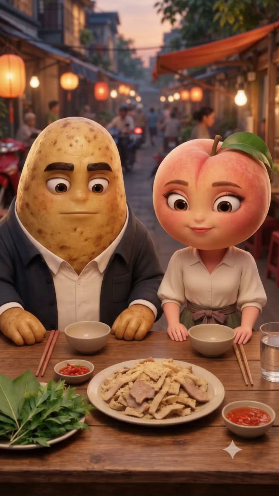
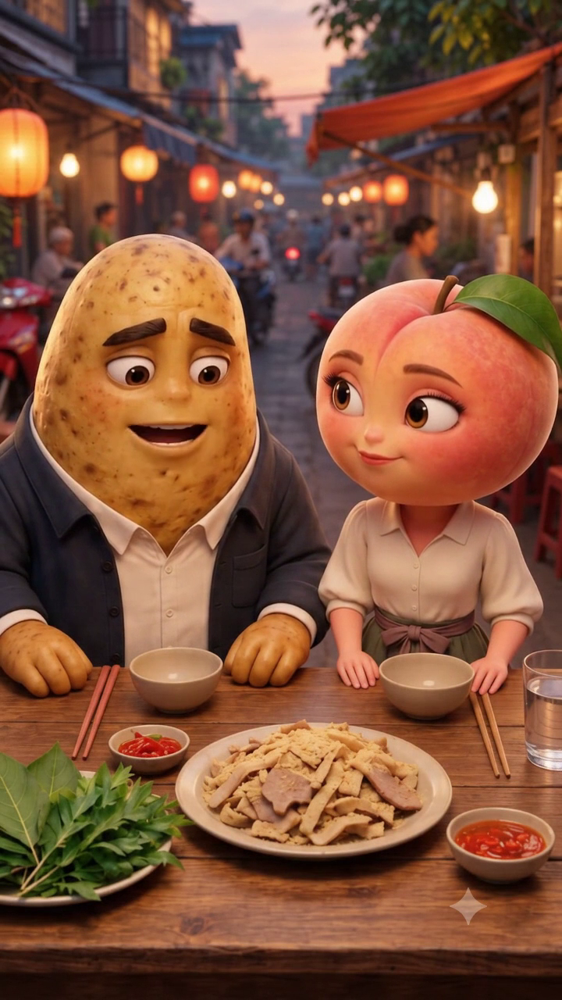
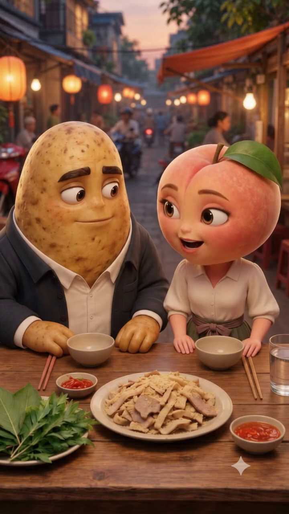
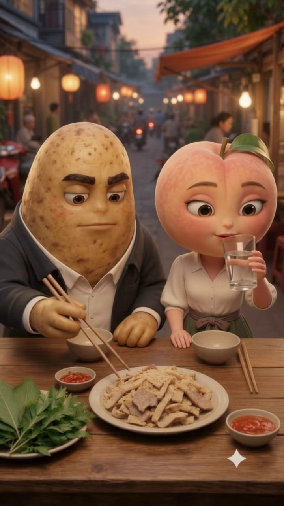
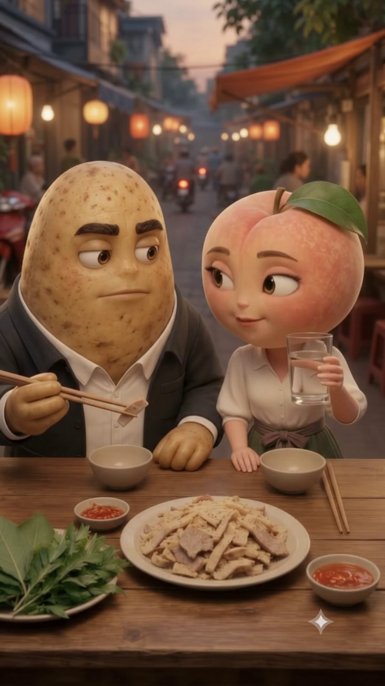
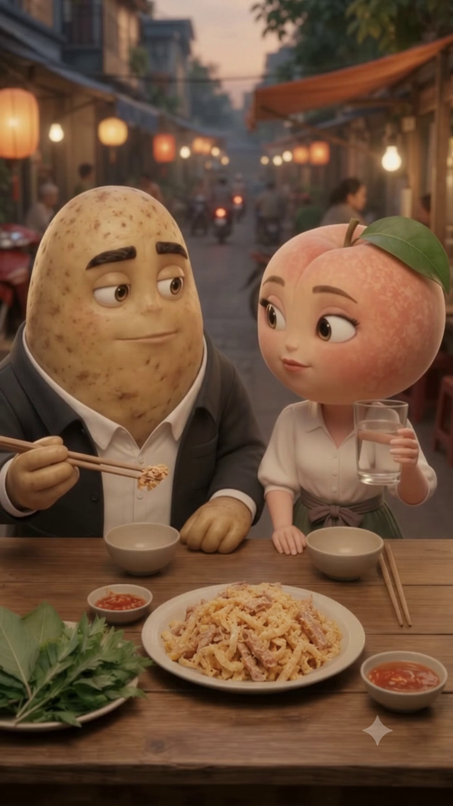
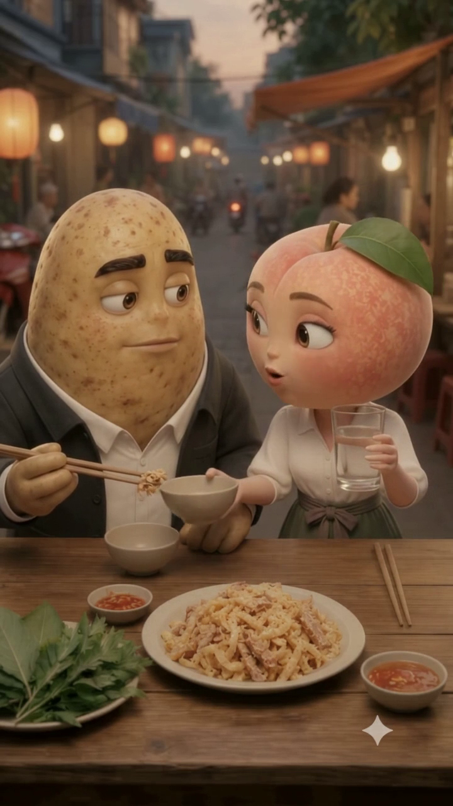
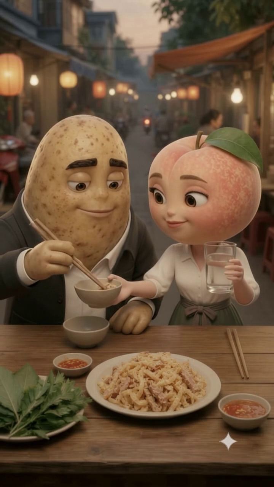
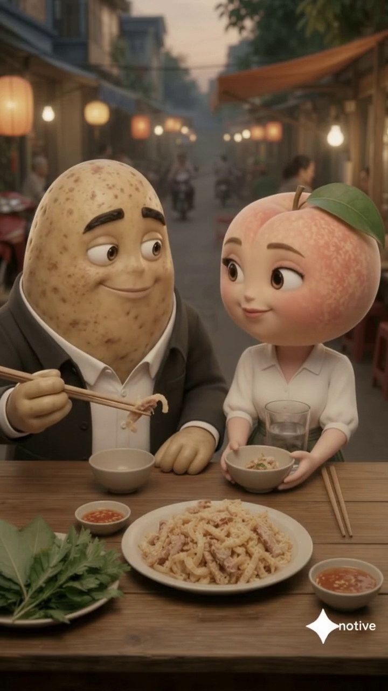

EP01 — Chín nhịp, điểm nhìn có chủ đích
Đề xuất REC313 · 14/10/2026 · Chưa duyệt góc quay / ảnh tham chiếu / lượt video mới.
R01 — Cùng bàn → Khoan

Điểm chú ý: Thiết lập
Giữ bữa ăn và động cơ ngắt. Món là ngữ cảnh; mắt và tay đang định lấy dẫn chú ý.
GIỮ / KIỂM LẠI BIÊN
C01A/BM/BR là ứng viên; không dùng ảnh tĩnh chứng nhận chuyển động nối.
R02 — Ký ức của Khoai

Điểm chú ý: Điểm nhìn Khoai
Đưa mắt và nét cười thành chính; nhìn về Đào. Nền phố và đĩa món lùi vai trò.
THIẾU GÓC K
Giữ tiếng đã chọn làm chuẩn; góc 3/4 mới cần hình mới và kiểm AV, không giả bằng crop.
R03 — Hỏi → đáp tỉnh bơ

Điểm chú ý: Điểm nhìn Đào ↔ Khoai
Câu hỏi dẫn sang ý đùa. Chuyển điểm nhìn có lý do; không cứ đổi người nói là cắt.
THIẾU CẶP GÓC
Cũ dùng được như phương án khung đôi; cặp D/K mới cần kiểm trục, gaze và tiếng.
R04 — Khán giả thấy anh tranh thủ

Điểm chú ý: Quan hệ hành động
Giữ cốc, hai mặt, đĩa và đường A cùng khung. Đào nhìn đi trước khi Khoai gắp.
GIỮ BACKBONE
C04 là nền hành động; chọn nhịp theo diễn biến, không ép theo slot.
R05 — Bắt gặp → khựng

Điểm chú ý: Nhìn A → nhìn anh
Khung chặt hơn để đọc sự phát hiện và khựng; A vẫn phải hiện, không biến thành chân dung rời.
DỰNG / HÌNH MỚI
C05 có tiếng và diễn; muốn coverage chặt mới cần nguồn, food seam chưa được miễn.
R06 — Chữa cháy

Điểm chú ý: Mặt Khoai + A
Lời tỉnh bơ đối lập nét ngượng kín. Đầu đũa và A ở thấp khung để lời không tách khỏi việc.
THIẾU GÓC K
Block308 giữ như đối chứng. Giọng K20 mới không tự được duyệt từ preset cũ.
R07 — Đào nhận lời chữa cháy

Điểm chú ý: Mặt Đào + bát
Đào chủ động đưa bát. Cận phải giữ bát và A, không chỉ có miệng nói.
THIẾU GÓC / GIỮ T
Có thể giữ khung chung hiện tại nếu đủ nhịp; không dời ngoại lệ đặt cốc C09 sang đây.
R08 — A vào bát

Điểm chú ý: Đũa → A → bát
Insert không thoại có nhiệm vụ chứng minh thả một lần. Không thêm nếu khung chung đã rõ.
CẬN I CHƯA CÓ
Nguồn C08 giữ phương án chung. Crop có thể mất pixel hoặc watermark: chưa coi hợp lệ.
R09 — Hai người cùng hiểu

Điểm chú ý: Trở lại bữa ăn
A ở bát Đào, B mới về Khoai. Đọc ánh nhìn cùng cười trước kết, không kết ở bát món.
GIỮ / CHỌN LẠI NHỊP
C09 giữ nguồn với ngoại lệ312. Đuôi đầy đủ chỉ là ứng viên, chưa hứa vừa30s.